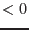

A bad pixel is defined as a pixel which is excluded from telemetry; an edge pixel is a `virtual pixel' just outside the sensitive area, in particular a pixel at the edge of the CCD.
. . . . .
. . b . . E E E E E
Bad pixel: . b B b . Edges: e e e e e
. . b . . . . . . .
. . . . . . . . . .
Edge pixels are treated similar to bad pixels.
Here 'E' is the area just outside the CCD, and 'e'
are the outermost pixels. Since 'E' acts like 'B',
'e' will be treated like 'b'.
Any single event which is located at 'b' will be considered as invalid ('B' is the position of the bad pixel), as will be any recognizable pattern with the maximum amplitude at 'b'. Recognizable patterns with their maximum outside 'b' will be treated as valid events. The reason for this treatment is that for events with their maximum at 'b', part of the charge distribution may be hidden in 'B'. This is less likely, if the maximum is located outside 'b'. Some typical singles and doubles at an edge:
E e . .
E e . .
single event E X . .
E e . .
E e . .
E e . . E e . . E e . . E e . .
E e . . E x . . E e . . E e . .
double pattern E x X . E X . . E X x . E X . .
E e . . E e . . E e . . E x . .
E e . . E e . . E e . . E e . .
The first (left) example above for double patterns is considered as valid double, the other three not.
Flags for invalid events / patterns (recognizable case):
| single | double | triple | quadruple | |
| PAT_TYP | -1 | -2 | -3 | -4 |
| PAT_IND | 0 | always  | ||
| PAT_ORI | 0 | always = 0 | ||
| PI | -A | -sum(a) for pixel with maximum amplitude | ||